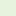

<!doctype html>
<html lang="en">

<head>
    <meta charset="utf-8">
    <meta http-equiv="X-UA-Compatible" content="IE=edge">
    <meta name="viewport" content="initial-scale=1,user-scalable=no,maximum-scale=1,width=device-width">
    <meta name="mobile-web-app-capable" content="yes">
    <meta name="apple-mobile-web-app-capable" content="yes">
    <link rel="stylesheet" href="css/leaflet.css">
    <link rel="stylesheet" href="css/L.Control.Layers.Tree.css">
    <link rel="stylesheet" href="css/qgis2web.css">
    <link rel="stylesheet" href="css/fontawesome-all.min.css">
    <link rel="stylesheet" href="css/filter.css">
    <link rel="stylesheet" href="css/nouislider.min.css">
    <link rel="stylesheet" href="css/leaflet.photon.css">
    <link rel="stylesheet" href="css/leaflet-measure.css">
    <style>
        html,
        body,
        #map {
            width: 100%;
            height: 100%;
            padding: 0;
            margin: 0;
        }
    </style>
    <title>Driftteknikernas fastigheter</title>
    <style id="copilot-fix">
        /* Ta bort vit bakgrund och standardkant */
        #menu {
            background: transparent !important;
            border: none !important;
        }

        /* Gör filterpanelen till en overlay som ligger ovanpå kartan */
        .col3#menu {
            position: absolute !important;
            right: 0;
            top: 0;
            max-width: 320px;
            /* justera vid behov */
            width: auto;
            height: 100%;
            z-index: 1000;
        }

        /* Låt kartfönstret fylla hela bredden */
        #mapWindow.col9 {
            width: 100% !important;
        }

        /* Mobilanpassning (panel smalare; kan sätta lätt transparent bakgrund om du vill) */
        @media (max-width: 768px) {
            .col3#menu {
                max-width: 85vw;
                background: rgba(255, 255, 255, 0) !important;
                /* 0 = helt transparent */
            }
        }
    </style>
</head>

<body>
    <div id="map">
    </div>
    <script src="js/qgis2web_expressions.js"></script>
    <script src="js/leaflet.js"></script>
    <script src="js/L.Control.Layers.Tree.min.js"></script>
    <script src="js/leaflet.rotatedMarker.js"></script>
    <script src="js/leaflet.pattern.js"></script>
    <script src="js/leaflet-hash.js"></script>
    <script src="js/Autolinker.min.js"></script>
    <script src="js/rbush.min.js"></script>
    <script src="js/labelgun.min.js"></script>
    <script src="js/labels.js"></script>
    <script src="js/leaflet.photon.js"></script>
    <script src="js/leaflet-measure.js"></script>
    <script src="js/tailDT.js"></script>
    <script src="js/nouislider.min.js"></script>
    <script src="js/wNumb.js"></script>
    <script src="data/bakgrund_1.js"></script>
    <script src="data/Markanvndning_2.js"></script>
    <script src="data/centroids_3.js"></script>
    <script src="data/OREBRO_KOMMUNGRANS_4.js"></script>
    <script>
        var highlightLayer;
        function highlightFeature(e) {
            highlightLayer = e.target;
            highlightLayer.openPopup();
        }
        var map = L.map('map', {
            zoomControl: false, maxZoom: 28, minZoom: 1
        }).fitBounds([[59.08653285113633, 14.781662887000698], [59.42479953068461, 15.821814270609835]]);
        var hash = new L.Hash(map);
        map.attributionControl.setPrefix('<a href="https://github.com/tomchadwin/qgis2web" target="_blank">qgis2web</a> &middot; <a href="https://leafletjs.com" title="A JS library for interactive maps">Leaflet</a> &middot; <a href="https://qgis.org">QGIS</a>');
        var autolinker = new Autolinker({ truncate: { length: 30, location: 'smart' } });
        // remove popup's row if "visible-with-data"
        function removeEmptyRowsFromPopupContent(content, feature) {
            var tempDiv = document.createElement('div');
            tempDiv.innerHTML = content;
            var rows = tempDiv.querySelectorAll('tr');
            for (var i = 0; i < rows.length; i++) {
                var td = rows[i].querySelector('td.visible-with-data');
                var key = td ? td.id : '';
                if (td && td.classList.contains('visible-with-data') && feature.properties[key] == null) {
                    rows[i].parentNode.removeChild(rows[i]);
                }
            }
            return tempDiv.innerHTML;
        }
        // modify popup if contains media
        function addClassToPopupIfMedia(content, popup) {
            var tempDiv = document.createElement('div');
            tempDiv.innerHTML = content;
            var imgTd = tempDiv.querySelector('td img');
            if (imgTd) {
                var src = imgTd.getAttribute('src');
                if (/\.(jpg|jpeg|png|gif|bmp|webp|avif)$/i.test(src)) {
                    popup._contentNode.classList.add('media');
                    setTimeout(function () {
                        popup.update();
                    }, 10);
                } else if (/\.(mp3|wav|ogg|aac)$/i.test(src)) {
                    var audio = document.createElement('audio');
                    audio.controls = true;
                    audio.src = src;
                    imgTd.parentNode.replaceChild(audio, imgTd);
                    popup._contentNode.classList.add('media');
                    setTimeout(function () {
                        popup.setContent(tempDiv.innerHTML);
                        popup.update();
                    }, 10);
                } else if (/\.(mp4|webm|ogg|mov)$/i.test(src)) {
                    var video = document.createElement('video');
                    video.controls = true;
                    video.src = src;
                    video.style.width = "400px";
                    video.style.height = "300px";
                    video.style.maxHeight = "60vh";
                    video.style.maxWidth = "60vw";
                    imgTd.parentNode.replaceChild(video, imgTd);
                    popup._contentNode.classList.add('media');
                    // Aggiorna il popup quando il video carica i metadati
                    video.addEventListener('loadedmetadata', function () {
                        popup.update();
                    });
                    setTimeout(function () {
                        popup.setContent(tempDiv.innerHTML);
                        popup.update();
                    }, 10);
                } else {
                    popup._contentNode.classList.remove('media');
                }
            } else {
                popup._contentNode.classList.remove('media');
            }
        }
        var title = new L.Control({ 'position': 'topleft' });
        title.onAdd = function (map) {
            this._div = L.DomUtil.create('div', 'info');
            this.update();
            return this._div;
        };
        title.update = function () {
            this._div.innerHTML = '<h2>Driftteknikernas fastigheter</h2>';
        };
        title.addTo(map);
        var zoomControl = L.control.zoom({
            position: 'topleft'
        }).addTo(map);
        var measureControl = new L.Control.Measure({
            position: 'topleft',
            primaryLengthUnit: 'meters',
            secondaryLengthUnit: 'kilometers',
            primaryAreaUnit: 'sqmeters',
            secondaryAreaUnit: 'hectares'
        });
        measureControl.addTo(map);
        document.getElementsByClassName('leaflet-control-measure-toggle')[0].innerHTML = '';
        document.getElementsByClassName('leaflet-control-measure-toggle')[0].className += ' fas fa-ruler';
        var bounds_group = new L.featureGroup([]);
        function setBounds() {
        }
        map.createPane('pane_OSMStandard_0');
        map.getPane('pane_OSMStandard_0').style.zIndex = 400;
        var layer_OSMStandard_0 = L.tileLayer('http://tile.openstreetmap.org/{z}/{x}/{y}.png', {
            pane: 'pane_OSMStandard_0',
            opacity: 1.0,
            attribution: '<a href="https://www.openstreetmap.org/copyright">© OpenStreetMap contributors, CC-BY-SA</a>',
            minZoom: 1,
            maxZoom: 28,
            minNativeZoom: 0,
            maxNativeZoom: 19
        });
        layer_OSMStandard_0;
        map.addLayer(layer_OSMStandard_0);
        function pop_bakgrund_1(feature, layer) {
            layer.on({
                mouseout: function (e) {
                    if (typeof layer.closePopup == 'function') {
                        layer.closePopup();
                    } else {
                        layer.eachLayer(function (feature) {
                            feature.closePopup()
                        });
                    }
                },
                mouseover: highlightFeature,
            });
            var popupContent = '<table>\
                    <tr>\
                        <td colspan="2">' + (feature.properties['fid'] !== null ? autolinker.link(String(feature.properties['fid']).replace(/'/g, '\'').toLocaleString()) : '') + '</td>\
                    </tr>\
                    <tr>\
                        <td colspan="2">' + (feature.properties['id'] !== null ? autolinker.link(String(feature.properties['id']).replace(/'/g, '\'').toLocaleString()) : '') + '</td>\
                    </tr>\
                </table>';
            var content = removeEmptyRowsFromPopupContent(popupContent, feature);
            layer.on('popupopen', function (e) {
                addClassToPopupIfMedia(content, e.popup);
            });
            layer.bindPopup(content, { maxHeight: 400 });
        }

        function style_bakgrund_1_0() {
            return {
                pane: 'pane_bakgrund_1',
                stroke: false,
                fill: true,
                fillOpacity: 1,
                fillColor: 'rgba(255,255,255,0.7333333333333333)',
                interactive: false,
            }
        }
        map.createPane('pane_bakgrund_1');
        map.getPane('pane_bakgrund_1').style.zIndex = 401;
        map.getPane('pane_bakgrund_1').style['mix-blend-mode'] = 'normal';
        var layer_bakgrund_1 = new L.geoJson(json_bakgrund_1, {
            attribution: '',
            interactive: false,
            dataVar: 'json_bakgrund_1',
            layerName: 'layer_bakgrund_1',
            pane: 'pane_bakgrund_1',
            onEachFeature: pop_bakgrund_1,
            style: style_bakgrund_1_0,
        });
        bounds_group.addLayer(layer_bakgrund_1);
        map.addLayer(layer_bakgrund_1);
        function pop_Markanvndning_2(feature, layer) {
            layer.on({
                mouseout: function (e) {
                    if (typeof layer.closePopup == 'function') {
                        layer.closePopup();
                    } else {
                        layer.eachLayer(function (feature) {
                            feature.closePopup()
                        });
                    }
                },
                mouseover: highlightFeature,
            });
            var popupContent = '<table>\
                    <tr>\
                        <td colspan="2">' + (feature.properties['MARKANV'] !== null ? autolinker.link(String(feature.properties['MARKANV']).replace(/'/g, '\'').toLocaleString()) : '') + '</td>\
                    </tr>\
                    <tr>\
                        <td colspan="2">' + (feature.properties['ANM'] !== null ? autolinker.link(String(feature.properties['ANM']).replace(/'/g, '\'').toLocaleString()) : '') + '</td>\
                    </tr>\
                    <tr>\
                        <td colspan="2">' + (feature.properties['GEOID'] !== null ? autolinker.link(String(feature.properties['GEOID']).replace(/'/g, '\'').toLocaleString()) : '') + '</td>\
                    </tr>\
                    <tr>\
                        <td colspan="2">' + (feature.properties['NAMN'] !== null ? autolinker.link(String(feature.properties['NAMN']).replace(/'/g, '\'').toLocaleString()) : '') + '</td>\
                    </tr>\
                </table>';
            var content = removeEmptyRowsFromPopupContent(popupContent, feature);
            layer.on('popupopen', function (e) {
                addClassToPopupIfMedia(content, e.popup);
            });
            layer.bindPopup(content, { maxHeight: 400 });
        }

        function style_Markanvndning_2_0(feature) {
            switch (String(feature.properties['MARKANV'])) {
                case 'Mark':
                    return {
                        pane: 'pane_Markanvndning_2',
                        stroke: false,
                        fill: true,
                        fillOpacity: 1,
                        fillColor: 'rgba(251,255,239,1.0)',
                        interactive: false,
                    }
                    break;
                case 'Ort':
                    return {
                        pane: 'pane_Markanvndning_2',
                        stroke: false,
                        fill: true,
                        fillOpacity: 1,
                        fillColor: 'rgba(255,231,198,1.0)',
                        interactive: false,
                    }
                    break;
                case 'Samh':
                    return {
                        pane: 'pane_Markanvndning_2',
                        stroke: false,
                        fill: true,
                        fillOpacity: 1,
                        fillColor: 'rgba(255,231,198,1.0)',
                        interactive: false,
                    }
                    break;
                case 'Skog':
                    return {
                        pane: 'pane_Markanvndning_2',
                        stroke: false,
                        fill: true,
                        fillOpacity: 1,
                        fillColor: 'rgba(231,243,222,1.0)',
                        interactive: false,
                    }
                    break;
                case 'Vatten':
                    return {
                        pane: 'pane_Markanvndning_2',
                        stroke: false,
                        fill: true,
                        fillOpacity: 1,
                        fillColor: 'rgba(198,235,255,1.0)',
                        interactive: false,
                    }
                    break;
            }
        }
        map.createPane('pane_Markanvndning_2');
        map.getPane('pane_Markanvndning_2').style.zIndex = 402;
        map.getPane('pane_Markanvndning_2').style['mix-blend-mode'] = 'normal';
        var layer_Markanvndning_2 = new L.geoJson(json_Markanvndning_2, {
            attribution: '',
            interactive: false,
            dataVar: 'json_Markanvndning_2',
            layerName: 'layer_Markanvndning_2',
            pane: 'pane_Markanvndning_2',
            onEachFeature: pop_Markanvndning_2,
            style: style_Markanvndning_2_0,
        });
        bounds_group.addLayer(layer_Markanvndning_2);
        map.addLayer(layer_Markanvndning_2);
        function pop_centroids_3(feature, layer) {
            layer.on({
                mouseout: function (e) {
                    if (typeof layer.closePopup == 'function') {
                        layer.closePopup();
                    } else {
                        layer.eachLayer(function (feature) {
                            feature.closePopup()
                        });
                    }
                },
                mouseover: highlightFeature,
            });
            var popupContent = '<table>\
                    <tr>\
                        <td colspan="2">' + (feature.properties['id'] !== null ? autolinker.link(String(feature.properties['id']).replace(/'/g, '\'').toLocaleString()) : '') + '</td>\
                    </tr>\
                    <tr>\
                        <th scope="row">CLUSTER_ID</th>\
                        <td class="visible-with-data" id="CLUSTER_ID">' + (feature.properties['CLUSTER_ID'] !== null ? autolinker.link(String(feature.properties['CLUSTER_ID']).replace(/'/g, '\'').toLocaleString()) : '') + '</td>\
                    </tr>\
                    <tr>\
                        <td colspan="2">' + (feature.properties['adress'] !== null ? autolinker.link(String(feature.properties['adress']).replace(/'/g, '\'').toLocaleString()) : '') + '</td>\
                    </tr>\
                </table>';
            var content = removeEmptyRowsFromPopupContent(popupContent, feature);
            layer.on('popupopen', function (e) {
                addClassToPopupIfMedia(content, e.popup);
            });
            layer.bindPopup(content, { maxHeight: 400 });
        }

        function style_centroids_3_0() {
            return {
                pane: 'pane_centroids_3',
                radius: 6.0,
                opacity: 1,
                color: 'rgba(55,55,55,1.0)',
                dashArray: '',
                lineCap: 'butt',
                lineJoin: 'miter',
                weight: 2.0,
                fill: true,
                fillOpacity: 1,
                fillColor: 'rgba(219,30,42,1.0)',
                interactive: true,
            }
        }
        map.createPane('pane_centroids_3');
        map.getPane('pane_centroids_3').style.zIndex = 403;
        map.getPane('pane_centroids_3').style['mix-blend-mode'] = 'normal';
        var layer_centroids_3 = new L.geoJson(json_centroids_3, {
            attribution: '',
            interactive: true,
            dataVar: 'json_centroids_3',
            layerName: 'layer_centroids_3',
            pane: 'pane_centroids_3',
            onEachFeature: pop_centroids_3,
            pointToLayer: function (feature, latlng) {
                var context = {
                    feature: feature,
                    variables: {}
                };
                return L.circleMarker(latlng, style_centroids_3_0(feature));
            },
        });
        bounds_group.addLayer(layer_centroids_3);
        map.addLayer(layer_centroids_3);
        function pop_OREBRO_KOMMUNGRANS_4(feature, layer) {
            layer.on({
                mouseout: function (e) {
                    if (typeof layer.closePopup == 'function') {
                        layer.closePopup();
                    } else {
                        layer.eachLayer(function (feature) {
                            feature.closePopup()
                        });
                    }
                },
                mouseover: highlightFeature,
            });
            var popupContent = '<table>\
                    <tr>\
                        <td colspan="2">' + (feature.properties['KOMMUN'] !== null ? autolinker.link(String(feature.properties['KOMMUN']).replace(/'/g, '\'').toLocaleString()) : '') + '</td>\
                    </tr>\
                    <tr>\
                        <td colspan="2">' + (feature.properties['ANMÄRKNING'] !== null ? autolinker.link(String(feature.properties['ANMÄRKNING']).replace(/'/g, '\'').toLocaleString()) : '') + '</td>\
                    </tr>\
                    <tr>\
                        <td colspan="2">' + (feature.properties['GEOID'] !== null ? autolinker.link(String(feature.properties['GEOID']).replace(/'/g, '\'').toLocaleString()) : '') + '</td>\
                    </tr>\
                </table>';
            var content = removeEmptyRowsFromPopupContent(popupContent, feature);
            layer.on('popupopen', function (e) {
                addClassToPopupIfMedia(content, e.popup);
            });
            layer.bindPopup(content, { maxHeight: 400 });
        }

        function style_OREBRO_KOMMUNGRANS_4_0() {
            return {
                pane: 'pane_OREBRO_KOMMUNGRANS_4',
                opacity: 1,
                color: 'rgba(35,35,35,1.0)',
                dashArray: '',
                lineCap: 'butt',
                lineJoin: 'miter',
                weight: 4.0,
                fill: true,
                fillOpacity: 1,
                fillColor: 'rgba(255,158,23,0.0)',
                interactive: false,
            }
        }
        map.createPane('pane_OREBRO_KOMMUNGRANS_4');
        map.getPane('pane_OREBRO_KOMMUNGRANS_4').style.zIndex = 404;
        map.getPane('pane_OREBRO_KOMMUNGRANS_4').style['mix-blend-mode'] = 'normal';
        var layer_OREBRO_KOMMUNGRANS_4 = new L.geoJson(json_OREBRO_KOMMUNGRANS_4, {
            attribution: '',
            interactive: false,
            dataVar: 'json_OREBRO_KOMMUNGRANS_4',
            layerName: 'layer_OREBRO_KOMMUNGRANS_4',
            pane: 'pane_OREBRO_KOMMUNGRANS_4',
            onEachFeature: pop_OREBRO_KOMMUNGRANS_4,
            style: style_OREBRO_KOMMUNGRANS_4_0,
        });
        bounds_group.addLayer(layer_OREBRO_KOMMUNGRANS_4);
        map.addLayer(layer_OREBRO_KOMMUNGRANS_4);
        map.on("zoomend", function (e) {
            if (map.getZoom() <= 11 && map.getZoom() >= 6) {
                map.addLayer(layer_Markanvndning_2);
            } else if (map.getZoom() > 11 || map.getZoom() < 6) {
                map.removeLayer(layer_Markanvndning_2);
            }
        });
        if (map.getZoom() <= 11 && map.getZoom() >= 6) {
            map.addLayer(layer_Markanvndning_2);
        } else if (map.getZoom() > 11 || map.getZoom() < 6) {
            map.removeLayer(layer_Markanvndning_2);
        }
        var overlaysTree = [
            { label: ' OREBRO_KOMMUNGRANS', layer: layer_OREBRO_KOMMUNGRANS_4 },
            { label: ' centroids', layer: layer_centroids_3 },
            { label: 'Markanvändning<br /><table><tr><td style="text-align: center;"></td><td>Mark</td></tr><tr><td style="text-align: center;"></td><td>Ort</td></tr><tr><td style="text-align: center;"></td><td>Samh</td></tr><tr><td style="text-align: center;"></td><td>Skog</td></tr><tr><td style="text-align: center;"></td><td>Vatten</td></tr></table>', layer: layer_Markanvndning_2 },
            { label: ' bakgrund', layer: layer_bakgrund_1 },
            { label: "OSM Standard", layer: layer_OSMStandard_0, radioGroup: 'bm' },]
        var lay = L.control.layers.tree(null, overlaysTree, {
            //namedToggle: true,
            //selectorBack: false,
            //closedSymbol: '&#8862; &#x1f5c0;',
            //openedSymbol: '&#8863; &#x1f5c1;',
            //collapseAll: 'Collapse all',
            //expandAll: 'Expand all',
            collapsed: true,
        });
        lay.addTo(map);
        setBounds();
        var mapDiv = document.getElementById('map');
        var row = document.createElement('div');
        row.className = "row";
        row.id = "all";
        row.style.height = "100%";
        var col1 = document.createElement('div');
        col1.className = "col9";
        col1.id = "mapWindow";
        col1.style.height = "99%";
        col1.style.width = "80%";
        col1.style.display = "inline-block";
        var col2 = document.createElement('div');
        col2.className = "col3";
        col2.id = "menu";
        col2.style.display = "inline-block";
        mapDiv.parentNode.insertBefore(row, mapDiv);
        document.getElementById("all").appendChild(col1);
        document.getElementById("all").appendChild(col2);
        col1.appendChild(mapDiv)
        var Filters = { "adress": "str" };
        function filterFunc() {
            map.eachLayer(function (lyr) {
                if ("options" in lyr && "dataVar" in lyr["options"]) {
                    features = this[lyr["options"]["dataVar"]].features.slice(0);
                    try {
                        for (key in Filters) {
                            keyS = key.replace(/[^a-zA-Z0-9_]/g, "")
                            if (Filters[key] == "str" || Filters[key] == "bool") {
                                var selection = [];
                                var options = document.getElementById("sel_" + keyS).options
                                for (var i = 0; i < options.length; i++) {
                                    if (options[i].selected) selection.push(options[i].value);
                                }
                                try {
                                    if (key in features[0].properties) {
                                        for (i = features.length - 1;
                                            i >= 0; --i) {
                                            if (selection.indexOf(
                                                features[i].properties[key]) < 0
                                                && selection.length > 0) {
                                                features.splice(i, 1);
                                            }
                                        }
                                    }
                                } catch (err) {
                                }
                            }
                            if (Filters[key] == "int") {
                                sliderVals = document.getElementById(
                                    "div_" + keyS).noUiSlider.get();
                                try {
                                    if (key in features[0].properties) {
                                        for (i = features.length - 1; i >= 0; --i) {
                                            if (parseInt(features[i].properties[key])
                                                < sliderVals[0]
                                                || parseInt(features[i].properties[key])
                                                > sliderVals[1]) {
                                                features.splice(i, 1);
                                            }
                                        }
                                    }
                                } catch (err) {
                                }
                            }
                            if (Filters[key] == "real") {
                                sliderVals = document.getElementById(
                                    "div_" + keyS).noUiSlider.get();
                                try {
                                    if (key in features[0].properties) {
                                        for (i = features.length - 1; i >= 0; --i) {
                                            if (features[i].properties[key]
                                                < sliderVals[0]
                                                || features[i].properties[key]
                                                > sliderVals[1]) {
                                                features.splice(i, 1);
                                            }
                                        }
                                    }
                                } catch (err) {
                                }
                            }
                            if (Filters[key] == "date"
                                || Filters[key] == "datetime"
                                || Filters[key] == "time") {
                                try {
                                    if (key in features[0].properties) {
                                        HTMLkey = key.replace(/[&\/\\#,+()$~%.'":*?<>{} ]/g, '');
                                        startdate = document.getElementById("dat_" +
                                            HTMLkey + "_date1").value.replace(" ", "T");
                                        enddate = document.getElementById("dat_" +
                                            HTMLkey + "_date2").value.replace(" ", "T");
                                        for (i = features.length - 1; i >= 0; --i) {
                                            if (features[i].properties[key] < startdate
                                                || features[i].properties[key] > enddate) {
                                                features.splice(i, 1);
                                            }
                                        }
                                    }
                                } catch (err) {
                                }
                            }
                        }
                    } catch (err) {
                    }
                    this[lyr["options"]["layerName"]].clearLayers();
                    this[lyr["options"]["layerName"]].addData(features);
                }
            })
        }
        document.getElementById("menu").appendChild(
            document.createElement("div"));
        var div_adress = document.createElement('div');
        div_adress.id = "div_adress";
        div_adress.className = "filterselect";
        document.getElementById("menu").appendChild(div_adress);
        sel_adress = document.createElement('select');
        sel_adress.multiple = true;
        sel_adress.size = 9;
        sel_adress.id = "sel_adress";
        var adress_options_str = "<option value='' unselected></option>";
        sel_adress.onchange = function () { filterFunc() };
        adress_options_str += '<option value="ad 12">ad 12</option>';
        adress_options_str += '<option value="ad 13">ad 13</option>';
        adress_options_str += '<option value="ad 14">ad 14</option>';
        adress_options_str += '<option value="ad 15">ad 15</option>';
        adress_options_str += '<option value="ad 16">ad 16</option>';
        adress_options_str += '<option value="ad 17">ad 17</option>';
        adress_options_str += '<option value="ad 18">ad 18</option>';
        adress_options_str += '<option value="ad 19">ad 19</option>';
        adress_options_str += '<option value="ad 20">ad 20</option>';
        sel_adress.innerHTML = adress_options_str;
        div_adress.appendChild(sel_adress);
        var lab_adress = document.createElement('div');
        lab_adress.innerHTML = 'adress';
        lab_adress.className = 'filterlabel';
        div_adress.appendChild(lab_adress);
        var reset_adress = document.createElement('div');
        reset_adress.innerHTML = 'clear filter';
        reset_adress.className = 'filterlabel';
        reset_adress.onclick = function () {
            var options = document.getElementById("sel_adress").options;
            for (var i = 0; i < options.length; i++) {
                options[i].selected = false;
            }
            filterFunc();
        };
        div_adress.appendChild(reset_adress);

        // === TOGGLE BUTTON FÖR ADRESS-FILTRET ===
        // Denna kod lägger till en knapp som tänden och släcker adress-filtret

        // Skapa toggle-knappen
        var toggleFilterBtn = document.createElement('button');
        toggleFilterBtn.id = 'toggleFilterBtn';
        toggleFilterBtn.innerHTML = '<i class="fas fa-sliders-h"></i> Dölj filter';
        toggleFilterBtn.style.cssText = 'position: fixed; top: 222px; right: 15px; z-index: 1000; padding: 8px 12px; background-color: #f8f8f8; border: 2px solid #999; border-radius: 4px; cursor: pointer; font-size: 14px; box-shadow: 0 2px 6px rgba(0,0,0,0.2);';
        document.body.appendChild(toggleFilterBtn);

        var filterVisible = true;

        // Toggle-funktionen
        toggleFilterBtn.onclick = function () {
            var divAdress = document.getElementById('div_adress');

            if (filterVisible) {
                // Dölj filtret
                divAdress.style.display = 'none';
                toggleFilterBtn.innerHTML = '<i class="fas fa-sliders-h"></i> Visa Filter';
                toggleFilterBtn.style.backgroundColor = '#e0e0e0';
                filterVisible = false;
            } else {
                // Visa filtret
                divAdress.style.display = 'block';
                toggleFilterBtn.innerHTML = '<i class="fas fa-sliders-h"></i> Dölj Filter';
                toggleFilterBtn.style.backgroundColor = '#f8f8f8';
                filterVisible = true;
            }
        };
    </script>
</body>

</html>